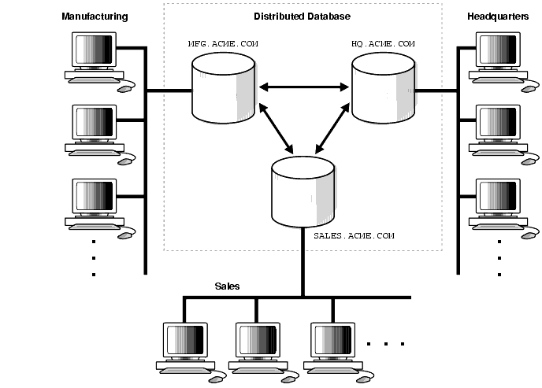

Bases de datos NoSQL. Clave-Valor¶
Propuesta didáctica¶
Una vez conocemos cómo funciona un SGBD relacional y cómo podemos explotarlo para extraer datos y manipularlos, en este último bloque nos centramos en soluciones no relacionales, y por lo tanto, finalizaremos el RA1 "Reconoce los elementos de las bases de datos analizando sus funciones y valorando la utilidad de los sistemas gestores", además de comenzar a trabajar el RA7: "Gestiona la información almacenada en bases de datos no relacionales, evaluando y utilizando las posibilidades que proporciona el sistema gestor".
Criterios de evaluación¶
Respecto al RABD.1:
- CE1g: Se ha reconocido la utilidad de las bases de datos distribuidas.
- CE1h: Se han analizado las políticas de fragmentación de la información.
- CE1j: Se han reconocido los conceptos de Big Data y de la inteligencia de negocios.
Respecto al RABD.7:
- CE7a: Se han caracterizado las bases de datos no relacionales.
- CE7b: Se han evaluado los principales tipos de bases de datos no relacionales.
- CE7c: Se han identificado los elementos utilizados en estas bases de datos.
- CE7d: Se han identificado distintas formas de gestión de la información según el tipo de base de datos no relacionales.
- CE7e: Se han utilizado las herramientas del sistema gestor para la gestión de la información almacenada.
Contenidos¶
Almacenamiento de la información:
- Bases de datos centralizadas y bases de datos distribuidas. Técnicas de fragmentación.
- Big Data: introducción, análisis de datos, inteligencia de negocios.
Bases de datos no relacionales:
- Uso de bases de datos no relacionales:
- Características de las bases de datos no relacionales.
- Tipos de bases de datos no relacionales.
- Elementos de las bases de datos no relacionales.
- Sistemas gestores de bases de datos no relacionales.
- Herramientas de los sistemas gestores de bases de datos no relacionales para la gestión de la información almacenada.
Programación de Aula (9h)¶
Esta unidad es la primera del bloque de soluciones NoSQL, la cual se imparte a final de curso, con una duración estimada de 9 horas, aportando 1 hora extra al proyecto formativo dual en la empresa:
| Sesión | Contenidos | Actividades | Criterios trabajados |
|---|---|---|---|
| 1 | Bases de datos distribuidas | AC1201 | CE1g, CE1h |
| 2 | Big Data y Business Intelligence | AC1202 | CE1j |
| 3 | NoSQL | AC1203 | CE7a |
| 4 | Tipos | ||
| 5 | Redis. CRUD | ||
| 6 | Tipos de datos | ||
| 7 | Mensajería | ||
| 8 | Proyecto I | ||
| 9 | Proyecto II |
Almacenamiento de datos¶
Se puede decir que estamos en la tercera plataforma del almacenamiento de datos. La primera llegó con los primeros computadores y se materializó en las bases de datos jerárquicas y en red, así como en el almacenamiento ISAM. La segunda vino de la mano de Internet y las arquitecturas cliente-servidor, lo que dio lugar a las bases de datos relacionales.
La tercera se ve motivada por el Big Data, los dispositivos móviles, las arquitecturas cloud, las redes de IoT y las tecnologías/redes sociales. Es tal el volumen de datos que se genera que aparecen nuevos paradigmas como NoSQL, NewSQL y las plataformas de Big Data.
NoSQL aparece como una necesidad debida al creciente volumen de datos sobre usuarios, objetos y productos que las empresas tienen que almacenar, así como la frecuencia con la que se accede a los datos. Los SGDB relacionales existentes no fueron diseñados teniendo en cuenta la escalabilidad ni la flexibilidad necesaria por las frecuentes modificaciones que necesitan las aplicaciones modernas; tampoco aprovechan que el almacenamiento a día de hoy es muy barato, ni el nivel de procesamiento que alcanzan las máquinas actuales.

La solución es el despliegue de las aplicaciones y sus datos en clústeres de servidores, distribuyendo el procesamiento en múltiples máquinas.
Bases de Datos Distribuidas¶
En la primera unidad aprendimos cómo se almacena la información en sistemas gestores de datos, normalmente centralizados. Esto es, todos los datos residen en un servidor o nodo central que sigue un modelo cliente-servidor, siendo los clientes las diferentes aplicaciones y servicios que consumen los datos mediante conexiones remotas gracias a Internet.
Por un lado, las bases de datos centralizas son sencillas de gestionar y mantener, y ofrecen una alta consistencia en los datos. Por contra, al centrar todos los datos en un único nodo, este se convierte en un SPOF (Single Point of Failure). Además, tienen una escalabilidad y rendimiento limitados a las características hardware de las máquinas donde corren.
Si el sistema crece y la carga de usuario supera la capacidad del servidor, es necesario migrar a un modelo más potente (y normalmente más caro) como son las bases de datos distribuidas, donde los datos se reparten entre varias máquinas, particionando los datos o fragmentándolos dependiendo de las necesidades de las aplicaciones, incrementando la complejidad del sistema para dar soporte a la sincronización de los datos y la tolerancia a fallos.
Así pues, una base de datos distribuida es aquella en la cual existen diversos servidores gestores de bases de datos conectados entre sí formando una única base de datos con un solo esquema lógico.
Un sistema gestor de bases de datos distribuidas (SGBDD) se define como el sistema software que permite la gestión de bases de datos distribuidas y hace la distribución de datos transparente para los usuarios.

Los servidores de una base de datos distribuida suelen denominarse nodos y pueden estar físicamente cercanos (mismo edificio o grupo de edificios) y conectados a través de una red de área local, o pueden estar distribuidos geográficamente a grandes distancias y conectados a través de una red de larga distancia.
En comparación con los sistemas centralizados, son más complejos en cuanto a su gestión, y la sincronización y consistencia de los datos es más difícil de garantizar.
Fragmentación¶
Dado el modo en el que se estructuran las bases de datos relacionales, normalmente escalan verticalmente - un único servidor cada vez más potente (más RAM, mejor CPU y almacenamiento) que almacena toda la base de datos para asegurar la disponibilidad continua de los datos. Esto se traduce en costes que se incrementan rápidamente, con un límites definidos por el propio hardware, y en un pequeño número de puntos críticos de fallo dentro de la infraestructura de datos.
La solución es escalar horizontalmente, añadiendo nuevos servidores en vez de concentrarse en incrementar la capacidad de un único servidor, lo que permite tratar con conjuntos de datos más grandes de lo que sería capaz cualquier máquina por sí sola. Este escalado horizontal se conoce como Sharding, fragmentación o particionado de los datos.
Si en un sistema relacional queremos particionar los datos, podemos distinguir entre fragmentación:
- Horizontal: diferentes filas en diferentes particiones, por ejemplo, dividir a los clientes por región geográfica.
- Vertical: diferentes columnas en particiones distintas, por ejemplo, separar los datos de contacto y financieros.

Escalar horizontalmente una base de datos relacional entre muchas instancias de servidores se puede conseguir pero normalmente conlleva el uso de SANs (Storage Area Networks) y otras triquiñuelas para hacer que el hardware actúe como un único servidor.
Como los sistemas SQL no ofrecen esta prestación de forma nativa, bien los productos ofrecen complementos para permitirla, como MySQL NDB Cluster o PostgreSQL con Citus, o bien los equipos de desarrollo se las tienen que ingeniar para conseguir desplegar múltiples bases de datos relacionales en varias máquinas, pudiendo utilizar una solución que actúe como intermediario (como ProxySQL), o bien, desarrollando una solución propia, como puede ser:
- Los datos se almacenan en cada instancia de base de datos de manera autónoma
- El código de aplicación se desarrolla para distribuir los datos y las consultas y agregar los resultados de los datos a través de todas las instancias de bases de datos
- Se debe desarrollar código adicional para gestionar los fallos sobre los recursos, para realizar joins entre diferentes bases de datos, balancear los datos y/o replicarlos, etc…
Si no queremos complicarnos la vida administrando los sistemas y configurando todas las herramientas, siempre podemos optar por una solución cloud como AWS RDS o Azure SQL DB, donde el tamaño de las instancias se puede modificar, así como configurar diferentes tipos de réplicas para mejorar la tolerancia a fallos.
Dicho esto, con un planteamiento de una base de datos distribuida, muchos beneficios de las bases de datos como la integridad transaccional se ven comprometidos o incluso eliminados al emplear un escalado horizontal.
Auto-sharding¶
Aunque las estudiaremos más adelante, conviene comentar que las bases de datos NoSQL normalmente soportan auto-sharding, lo que implica que de manera nativa y automáticamente se dividen los datos entre un número arbitrario de servidores, sin que la aplicación sea consciente de la composición del clúster de servidores. Los datos y las consultas se balancean entre los servidores.
El particionado se realiza mediante un método consistente, como puede ser:
-
Por rangos de su id: por ejemplo "los usuarios del 1 al millón están en la partición 1" o "los usuarios cuyo nombre va de la A a la L" en una partición, en otra de la M a la Q, y de la R a la Z en la tercera.

Particionado por rango - digitalocean.com -
Por listas: dividiendo los datos por la categoría del dato, es decir, en el caso de datos sobre libros, las novelas en una partición, las recetas de cocina en otra, etc..
-
Mediante un función hash, la cual devuelve un valor para un elemento que determine a qué partición pertenece.

Particionado por hash - digitalocean.com
Independientemente del método, el atributo o clave que se elige para decidir a qué partición va cada dato se conoce como Shard key, o clave de particionado.
Cuando particionar¶
El motivo para particionar los datos se debe a:
- limitaciones de almacenamiento: los datos no caben en un único servidor, tanto a nivel de disco como de memoria RAM.
- rendimiento: al balancear la carga entre particiones las escrituras serán más rápidas que al centrarlas en un único servidor.
- disponibilidad: si un servidor esta ocupado, otro servidor puede devolver los datos. La carga de los servidores se reduce.
No particionaremos los datos cuando la cantidad sea pequeña, ya que el hecho de distribuir los datos conlleva unos costes que pueden no compensar con un volumen de datos insuficiente. Tampoco esperaremos a particionar cuando tengamos muchísimos datos, ya que el proceso de particionado puede provocar sobrecarga del sistema.
La nube facilita de manera considerable este escalado, mediante proveedores como AWS o Azure los cuales ofrecen virtualmente una capacidad ilimitada bajo demanda, y despreocupándose de todas las tareas necesarias para la administración de la base de datos.
Los desarrolladores ya no necesitamos construir plataformas complejas para nuestras aplicaciones, de modo que nos podemos centrar en escribir código de aplicación. Una granja de servidores con commodity hardware puede ofrecer el mismo procesamiento y capacidad de almacenamiento que un único servidor de alto rendimiento por mucho menos coste.
Replicación¶
La replicación mantiene copias idénticas de los datos en múltiples servidores, lo que facilita que las aplicaciones siempre funcionen y los datos se mantengan seguros, incluso si alguno de los servidores sufre algún problema.
La mayoría de las bases de datos actuales también soportan la replicación automática, lo que implica una alta disponibilidad y recuperación frente a desastres sin la necesidad de aplicaciones de terceros encargadas de ello. Desde el punto de vista del desarrollador, el entorno de almacenamiento es virtual y ajeno al código de aplicación.
Antes de ver los tipos, hemos de ser conscientes de cual va a ser la función de la máquina replicada. Si queremos tener una copia de los datos, la cual sólo vamos a utilizar para realizar operaciones de consulta (réplica de lectura) va a implicar una configuración diferente de si lo que queremos es replicar nodos donde queremos que se pueda escribir también (réplica de escritura).
Dicho esto, las principales arquitecturas de replicación son:
-
Maestro-esclavo / Primario-secundario
Todas las escrituras se realizan en el nodo principal y después se replican a los nodos secundarios. El nodo primario es un SPOF (single point of failure).
-
Multi-maestro / Entre pares (peer-to-peer)
Todos los nodos tienen el mismo nivel jerárquico, de manera que todos (o casi todo) admiten escrituras. Al poder haber escrituras simultáneas sobre el mismo datos en diferentes nodos, pueden darse inconsistencia en los datos.

Conviene aclarar que cada modelo conlleva que los datos tengan diferente tipo de consistencia:
- Consistencia fuerte: Garantiza que todas las réplicas tienen los mismos datos antes de confirmar cualquier operación, esto es, que después de que una escritura se complete, todas las lecturas reflejan inmediatamente el valor actualizado. Por ejemplo, los sistemas bancarios y las bases de datos que soportan ACID.
- Consistencia eventual: Permite cierto desfase temporal entre réplicas, aceptando que los datos se sincronizarán en algún momento, a costa de poder llegar a leer datos desactualizados. Usos típicos serían los likes o comentarios en redes sociales.
La replicación de los datos se utiliza para alcanzar:
- escalabilidad, incrementando el rendimiento al poder distribuir las consultas en diferentes nodos, y mejorar la redundancia al permitir que cada nodo tenga una copia de los datos.
- disponibilidad, ofreciendo tolerancia a fallos de hardware o corrupción de la base de datos. Al replicar los datos vamos a poder tener una copia de la base de datos, dar soporte a un servidor de datos agregados, o tener nodos a modo de copias de seguridad que pueden tomar el control en caso de fallo.
- aislamiento (la i en ACID - isolation), entendido como la propiedad que define cuando y cómo al realizar cambios en un nodo se propagan al resto de nodos. Si replicamos los datos podemos crear copias sincronizadas para separar procesos de la base de datos de producción, pudiendo ejecutar informes, analítica de datos o copias de seguridad en nodos secundarios de modo que no tenga un impacto negativo en el nodo principal, así como ofrecer un sistema sencillo para separar el entorno de producción del de preproducción.
Replicación vs particionado
No hay que confundir la replicación (copia de los datos en varias máquinas) con el particionado (cada máquina tiene un subconjunto de los datos). El entorno más seguro y con mejor rendimiento es aquel que tiene los datos particionados y replicados (cada máquina que tiene un subconjunto de los datos está replicada en 2 o más).

Big Data¶
Aunque parece que todo el mundo debe trabajar con cuantos más datos mejor, no todo es Big Data en el mundo tecnológico.

Esta claro que los datos son el petroleo del siglo XX, tal como dijo Clive Humby en el 2006, y que se puede obtener mucho valor si almacenamos y sabemos extraer información precisa de "nuestros" datos. Sin embargo, ya en la década del 2020, los datos per se no son suficiente si no que debemos conocerlos y cuidarlos.
Pero el adjetivo Big implica cantidades ingentes, dicho de otro modo, cantidades de datos que una de nuestras máquinas no puede gestionar y necesita de la computación distribuida y plataformas como el cloud para su almacenamiento y gestión. Es probable que con soluciones de Small Data podamos cubrir gran parte de los problemas que requieren nuestra industria más cercana. Eso sí, muchas de las técnicas y destrezas asociadas a la ingeniería de datos no son únicas de grandes volúmenes de datos con arquitecturas distribuidas, sino que, podemos llevárnoslas a nuestros desarrollos a menor escala para automatizar y poner los datos por delante de nuestras empresas y aplicaciones.
Pero antes de entrar en harina, retrocedamos en el tiempo.
Hablemos de V¶
V fue un fenómeno en los 80 como serie de ciencia ficción, pero relacionado con el Big Data, dependiendo de la literatura, tenemos las 3V del Big Data, las 5V, las 7V...
En los inicios, para saber si hablábamos o no de Big Data, nos teníamos que preguntar si cumplían con las 3V:
- Variedad: en relación a las fuentes, formas y tipos. Por ejemplo, pueden ser: estructurados, como tablas de una base de datos relacional o ficheros de texto o semiestructurados como los documentos JSON. Incluso almacenar datos no estructurados como correos electrónicos, imágenes o audios.
- Volumen: Entendida como la cantidad de datos procesados y almacenados. A día de hoy probablemente superior al orden de TB de datos y que para su procesamiento, superan la memoria RAM de nuestros sistemas.
- Velocidad: el tratamiento que realizamos sobre los datos, en ocasiones cercano al tiempo real o con unos tiempos de recolección, procesamiento y almacenamiento finitos y claramente definidos.
Luego se añadieron un par más, haciendo un total de 5V:
- Valor: "Lo que importa, son los datos importantes", los que aportan valor, transformando datos en información, y a su vez, en conocimiento que facilita la toma de decisiones.
- Veracidad: Debemos asegurar que los datos que tenemos son reales y no contienen datos erróneos, es decir, que son fiables. Se dedica un esfuerzo importante en explorar y validar los datos para que la analítica realizada sea veraz.
Y por último, otras dos hasta llegar a las 7V:
- Viabilidad: Es necesario saber la capacidad que tiene una empresa para realizar un uso eficaz de los datos, cuestionarse qué y cuántos datos se necesitan para predecir los resultados más interesantes para la empresa.
- Visualización: Necesitamos poder representar los datos, ya sea de manera visual mediante gráficos o codificados en indicadores (KPI) para hacer que sean legibles y accesibles.

Claramente, para los departamentos de marketing, Big Data se escribe con V.
Inteligencia de negocio¶
Mientras que las aplicaciones Big Data recogen información desde múltiples fuentes de entrada, el concepto de inteligencia de negocio (business intelligence) se centra en el uso que hace la empresa de dichos datos, es decir, coge los datos y los transforma en conocimiento para la ayuda en la toma de decisiones en base a los datos analizados.
El término de analítica de datos implica procesar, limpiar, organizar y extraer información útil de grandes volúmenes de datos. Para ello, las herramientas de Business Intelligence (BI) son aplicaciones de soporte de decisiones que permiten en tiempo real, acceso interactivo, análisis y manipulación de información crítica y así ser capaces de generar conocimiento mediante el análisis de la información ya almacenada, es decir, realizando analítica descriptiva (¿Qué sucedió?) y diagnóstica (¿Por qué sucedió?).
Con la ayuda del Big Data y la IA, podemos afrontar analíticas más avanzadas, como son la analítica predictiva (¿Qué pasará en el futuro?) y prescriptiva (¿Cómo podemos prevenir? ¿Qué debería suceder?) para establecer tendencias, averiguar por qué suceden las cosas y hacer una estimación de cómo se desarrollarán las cosas en el futuro.
Algunos componentes clave que forman parte del BI son:
- Almacenes de datos (Data warehouse)
- Procesos ETL
- Reporting
- Cuadros de mandos
- Minería de datos
Ciencia de datos¶
La ciencia de datos incluye una serie de métodos para analizar tanto pequeños conjuntos de datos como cantidades enormes. Aunque no exista una proceso claramente definidos, podemos identificar los siguientes pasos:
- Establecer el objetivo de la investigación: todas las partes interesadas entienden el qué, el cómo y el por qué del proyecto y se crea un project charter o acta de constitución del proyecto.
- Recuperación de datos: búsqueda de los datos, ya sean internos o externos a la empresa. El resultado son datos en bruto que seguramente habrá que limpiar (eliminar o corregir datos incompletos o erróneos, como por ejemplo, edades en negativo, fechas mal formateadas, etc...) y transformar antes de poder utilizarlos.
- Preparación de los datos: necesitamos transformar los datos para que sean utilizables por los modelos, detectando y corrigiendo los diferentes tipos de errores, combinando datos de diversas fuentes. Un paso muy frecuente consiste en normalizar los datos, proceso consistente en transformar los datos categóricos en numéricos.
- Exploración de datos, para obtener un conocimiento profundo de los datos, buscando patrones, correlaciones o desviaciones, normalmente, mediante técnicas visuales y descriptivas.
- Modelado: creación de modelos, en ocasiones basados en IA, para obtener la información o realizar las predicciones indicadas en el acta de constitución del proyecto.
- Presentación y automatización: Con la presentación de los resultados obtenidos (por ejemplo, mediante herramientas como PowerBI o Tableau) y su comprobación, es probable que se entre en un ciclo iterativo que provoque volver al paso 2 con datos nuevos y requiera automatizar todos el proceso.
NoSQL¶
Si definimos NoSQL formalmente, podemos decir que se trata de un conjunto de tecnologías que permiten el procesamiento rápido y eficiente de conjuntos de datos dando la mayor importancia al rendimiento, la fiabilidad y la agilidad.
Si nos basamos en el acrónimo, el término da la sensación que se refiere a cualquier almacén de datos que no sigue un modelo relacional, los datos no son relacionales y por tanto no utilizan SQL como lenguaje de consulta. Realmente implica que el No hace referencia a not only, es decir, que los sistemas NoSQL se centran en sistemas complementarios a los SGBD relacionales, que fijan sus prioridades en la escalabilidad y la disponibilidad en contra de la atomicidad y consistencia de los datos.
Así pues, la revolución NoSQL se basa en comprender que hay más de una manera de resolver los problemas. Hay vida más allá de los sistemas de bases de datos relacionales, y NoSQL permite elegir la mejor herramienta para cada situación, que en algunas ocasiones será una base de datos relacional, pero en otras no. Por lo tanto, más que sustitutos de los sistemas relacionales, las soluciones NoSQL se plantean como alternativas y complementarias a los sistemas gestores de bases de datos relacionales.
ACID
Las bases de datos relacionales cumplen las características ACID para ofrecer transaccionalidad sobre los datos:
- Atomicidad: las transacciones implican que se realizan todas las operaciones o no se realiza ninguna.
- Consistencia: la base de datos asegura que los datos pasan de un estado válido o otro también.
- Isolation (Aislamiento): Una transacción no afecta a otras transacciones, de manera que la modificación de un registro / documento no es visible por otras lecturas hasta que ha finalizado la transacción. Esto implica que ninguna transacción obtiene una versión intermedia de los datos.
- Durabilidad: La escritura de los datos asegura que una vez finalizada una operación, los datos no se perderán.
Los diferentes tipos de bases de datos NoSQL existentes se pueden agrupar en cuatro categorías:
-
Clave-Valor: Los almacenes clave-valor son las bases de datos NoSQL más simples. Cada elemento de la base de datos se almacena con un nombre de atributo (o clave) junto a su valor, a modo de diccionario. Los almacenes más conocidos son Redis, Riak y AWS DynamoDB. Algunos almacenes, como es el caso de Redis, permiten que cada valor tenga un tipo (por ejemplo, integer) lo cual añade funcionalidad extra.
-
Documentales: Cada clave se asocia a una estructura compleja que se conoce como documento. Este puede contener diferentes pares clave-valor, o pares de clave-array o incluso documentos anidados, como en un documento JSON. Los ejemplos más conocidos son MongoDB y CouchDB.
-
Grafos: Los almacenes de grafos se usan para almacenar información sobre redes, como pueden ser conexiones sociales. Los ejemplos más conocidos son Neo4J, AWS Neptune y ArangoDB.
-
Basados en columnas: Los almacenes basados en columnas como BigTable, Cassandra y HBase están optimizados para consultas sobre grandes conjuntos de datos, y almacenan los datos como columnas en vez de como filas.

Características¶
Si nos centramos en sus beneficios y los comparamos con las base de datos relacionales, las bases de datos NoSQL son más escalables, ofrecen un rendimiento mayor y sus modelos de datos resuelven varios problemas que no se plantearon al definir el modelo relacional:
- Grandes volúmenes de datos estructurados, semi-estructurados y sin estructurar. Casi todas las implementaciones NoSQL ofrecen algún tipo de representación para datos sin esquema, lo que permite comenzar con una estructura y con el paso del tiempo, añadir nuevos campos, ya sean sencillos o anidados a datos ya existentes.
- Sprints ágiles, iteraciones rápidas y frecuentes commits/pushes de código, al emplear una sintaxis sencilla para la realización de consultas y la posibilidad de tener un modelo que vaya creciendo al mismo ritmo que el desarrollo.
- Arquitectura eficiente y escalable diseñada para trabajar con clusters en vez de una arquitectura monolítica y costosa. Las soluciones NoSQL soportan la escalabilidad de un modo transparente para el desarrollador y ofrecen una solución cloud.
Una característica adicional que comparten los sistemas NoSQL es que ofrecen un mecanismo de caché de datos integrado (en los sistemas relacionales se pueden configurar de manera externa), pudiendo configurar los sistemas para que los datos se mantengan en memoria y se persistan de manera periódica. El uso de una caché conlleva que la consistencia de los datos no sea completa y podamos tener una consistencia eventual.
Esquema dinámicos¶
Las bases de datos relacionales requieren definir los esquemas antes de añadir los datos. Una base de datos SQL necesita saber de antemano los datos que vamos a almacenar; por ejemplo, si nos centramos en los datos de un cliente, serían el nombre, apellidos, número de teléfono, etc…
Esto casa bastante mal con los enfoques de desarrollo ágil, ya que cada vez que añadimos nuevas funcionalidades, el esquema de la base de datos suele cambiar. De modo que si a mitad de desarrollo decidimos almacenar los productos favoritos de un cliente del cual guardábamos su dirección y números de teléfono, tendríamos que añadir una nueva columna a la base de datos y migrar la base de datos entera a un nuevo esquema.
Si la base de datos es grande, conlleva un proceso lento que implica parar el sistema durante un tiempo considerable. Si frecuentemente cambiamos los datos que la aplicación almacena (al usar un desarrollo iterativo), también tendremos períodos frecuentes de inactividad del sistema, a no ser que utilicemos un despliegue azul/verde y tengamos redundancia de nuestro sistema de almacenamiento. Así pues, no hay un modo efectivo mediante una base de datos relacional de almacenar los datos que están desestructurados o que no se conocen de antemano.
Las bases de datos NoSQL se construyen para permitir la inserción de datos sin un esquema predefinido. Esto facilita la modificación de la aplicación en tiempo real, sin preocuparse por interrupciones de servicio. Aunque no tengamos un esquema al guardar la información, sí que podemos definir esquemas de lectura (schema-on-read) para comprobar que la información almacenada tiene el formato que espera cargar cada aplicación.
De este modo se consigue un desarrollo más rápido, integración de código más robusto y menos tiempo empleado en la administración de la base de datos.
Aunque lo veremos en profundidad en las siguientes sesiones, los modelos de datos NoSQL priman la redundancia de los datos, denormalizando los datos para evitar el uso de joins. Por ello, es importante que la definición de los esquemas sea flexible para poder añadir campos conforme la aplicación evolucione.
Modelos¶
Teorema de CAP¶
Propuesto por Eric Brewer en el año 2000, prueba que podemos crear una base de datos distribuida que elija dos de las siguientes tres características:
- Consistencia: las escrituras son atómicas y todas las peticiones posteriores obtienen el nuevo valor, independientemente del lugar de la petición.
- Disponibilidad (Available): la base de datos devolverá siempre un valor. En la práctica significa que no hay downtime.
- Tolerancia a Particiones: el sistema funcionará incluso si la comunicación con un servidor se interrumpe de manera temporal (para ello, ha de dividir los datos entre diferentes nodos). Es decir, implica que se pueden recibir lecturas desde unos nodos que no contienen información escrita en otros.
En otras palabras, podemos crear un sistema de base de datos que sea consistente y tolerante a particiones (CP), un sistema que sea disponible y tolerante a particiones (AP), o un sistema que sea consistente y disponible (CA). Pero no es posible crear una base de datos distribuida que sea consistente, disponible y tolerante a particiones al mismo tiempo.

El teorema CAP es útil cuando consideramos el sistema de base de datos que necesitamos, ya que nos permite decidir cual de las tres características vamos a descartar. La elección realmente se centra entre la disponibilidad y la consistencia, ya que la tolerancia a particiones es una decisión de arquitectura (sea o no distribuida).
Aunque el teorema dicte que si en un sistema distribuido elegimos disponibilidad no podemos tener consistencia, todavía podemos obtener consistencia eventual. Es decir, cada nodo siempre estará disponible para servir peticiones, aunque estos nodos no puedan asegurar que la información que contienen sea consistente (pero si bastante precisa), en algún momento lo será.
Algunas bases de datos tolerantes a particiones se pueden ajustar para ser más o menos consistentes o disponible a nivel de petición. Por ejemplo, Riak trabaja de esta manera, permitiendo a los clientes decidir en tiempo de petición qué nivel de consistencia necesitan.
Clasificación según CAP¶
El siguiente gráfico muestra cómo dependiendo de estos atributos podemos clasificar los sistemas NoSQL:

Así pues, las bases de datos NoSQL se clasifican en:
- CP: Consistente y tolerantes a particiones. Tanto MongoDB como HBase son CP, ya que dentro de una partición pueden no estar disponibles para responder una determinada consulta (por ejemplo, evitando lecturas en los nodos secundarios), aunque son tolerantes a fallos porque cualquier nodo secundario se puede convertir en principal y asumir el rol del nodo caído.
- AP: Disponibles y tolerantes a particiones. DynamoDB permite replicar los datos entre sus nodos aunque no garantiza la consistencia en ninguno de los sus servidores.
- CA: Consistentes y disponible. Aquí es donde situaríamos a los SGDB relacionales. Por ejemplo, PostreSQL es CA (aunque ofrece un producto complementario para dar soporte al particionado, como PgCluster), ya que no distribuyen los datos y por tanto la partición no es una restricción.
Lo bueno es que la gran mayoría de sistemas permiten configurarse para cambiar su tipo CAP, lo que permite que MongoDB pase de CP a AP, o CouchDB de AP a CP.
Redis¶
Referencias¶
Actividades¶
-
AC1201. (RABD.1 // CE1g, CE1h // 3p) Ejercicio sobre BD distribuidas y fragmentación.
Realizar una infografía sobre los sistemas NoSQL, destacando su enfoque distribuido, el particionado de los datos, su relación con el Big Data.
-
AC1202. (RABD.1 // CE1j // 3p) Ejercicio sobre los conceptos de Big Data y de la inteligencia de negocios.
A partir de la infografía anterior, en una nueva infografía, destaca las semejanzas y diferencias entre un sistema relacional y uno no relacional